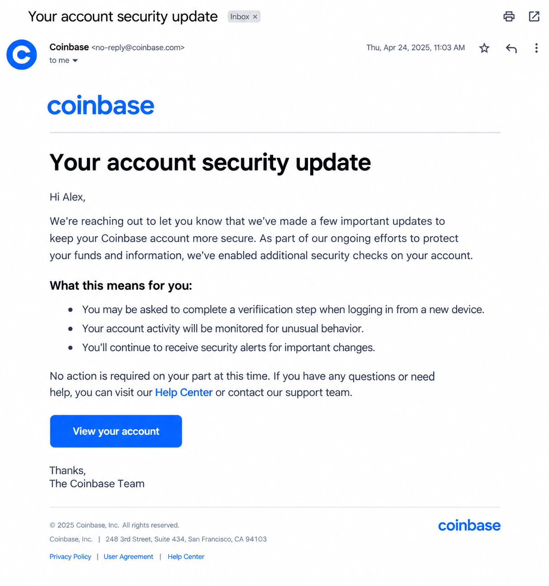

Legitimate Example

A legitimate investment provides information about its risks, fees, and how it operates. The provider can be independently researched, and returns are not presented as guaranteed or risk-free.
Remember: legitimate investments can lose value. Always research the provider and understand the risks before committing money.